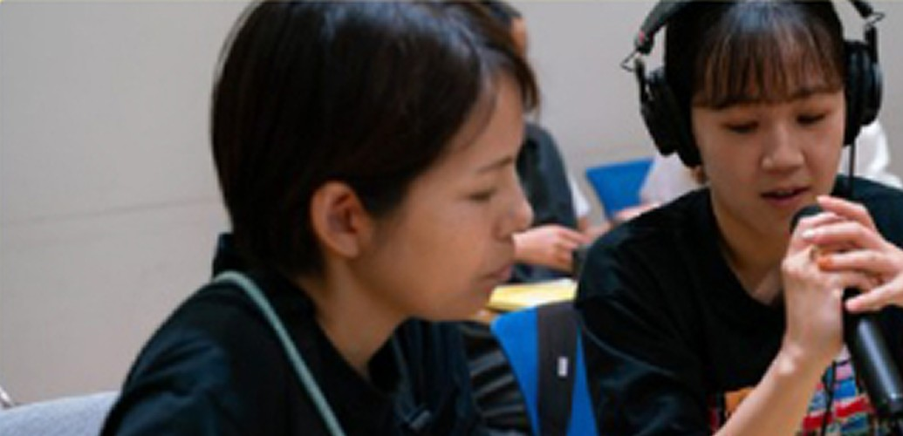
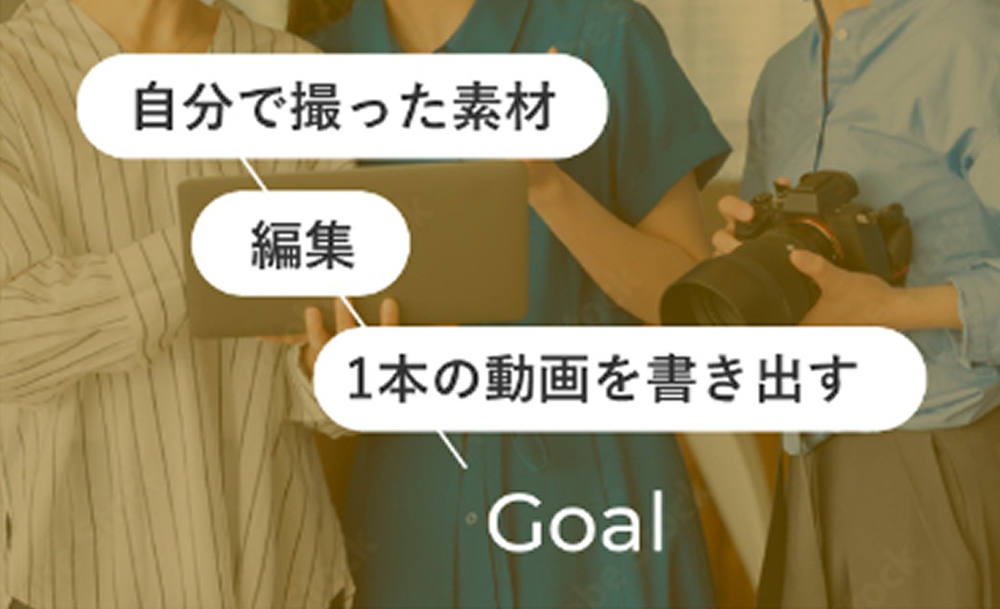

写真の先に、どんな仕事があるのか分からない
ビデオグラファーという働き方と、
そこへ向かうロードマップが分かる
MIMOSA STUDIO mini
フォトグラファーのための動画入門

キャリアの違いから、初期装備、撮影、編集まで、現役の映像クリエイターと一緒にたどります。
密度の濃い30日間で、自分で撮った素材を1本の動画として書き出すところまで進みましょう。
動画が気になる
けれど…を
ビデオグラファーという働き方と、
そこへ向かうロードマップが分かる
写真と比べながら、
最初に必要な設定だけに絞れる
何が必要で、何がいらないかが分かる。
講師が実際に使っているものも見られる
「まずこれ、次にこれ」の順番が見える
編集のセットアップから講師と一緒に
やって、自分の素材で1本を書き出す
同じところから始める仲間と、
質問できる場所がある
11.26 THU 20:00
フォトグラファーとビデオグラファーの違い
12.2 WED 20:00
映像を始める人の初期装備
〜12.10
自分で素材を撮ってくる
12.12 SAT 10:00
東京で1日、編集のセットアップから書き出しまで
12.14 MON 20:00（仮）
オンライン編集講座：
対面と同じ内容をオンラインで
12.22 TUE 20:00
発表会
LIVE 01 / 120分
LIVE 02 / 120分
ASSIGNMENT

対面WORKSHOP | 東京 1日
※オンラインプランの方は、同じ内容をオンライン編集講座（ライブ120分）で学びます。
LIVE 03 / 90分

「動画が完成した」という経験と、その先の自分の姿を持ち帰ってもらうことがゴールです。

mimosa合同会社
代表｜映像監督
2013年よりテレビ番組制作に従事し、2017年に独立。日本とニューヨークを拠点に国際的な映像制作を行う。日本テレビ系「アナザースカイ」のディレクターを務めるほか、企業のグローバルプロジェクトやブランドストーリーの演出を多数担当。物語を立体的に描く表現を強みとする。
日米で培った視点をもとに、日本の美意識や地域に根ざす物語を国境を越えて届けている。
ブライダル映像の制作現場でキャリアをスタートし、2016年に独立。現在はテレビ番組やドキュメンタリー、コーポレート映像などの現場でカメラマン・プロデューサーとして活動。2021年に映像制作会社mimosaを設立し、経営者と表現者両方の視点を持つ。
現場で培った「本物の視点」をもとに、単なる技術習得に留まらない、社会に必要とされ、クライアントに「任せたい」と思われるクリエイターの育成に注力している。
49,800円（税込）
定員20名
98,000円（税込）
定員12名
※会場までの交通費は各自のご負担です
申込締切：11月20日（金）
セミナー参加者の方は、
11/17まで対面席を優先してご案内します
※カメラに初めて触れる方向けの基礎講座ではありません。
作品を完璧に仕上げることより、撮る力と見る目を持ち帰ることを大切にしています。
動画が撮れるカメラなら、今お持ちのもので始められます。買い足すかどうかは、講義②（初期装備）を聞いてから決めてください。
Adobe Premiereを使います。
講義②で、選び方と買い替えの目安をお伝えします。開講前に不安があれば、LINEでご相談ください。
アーカイブで見られます。課題の提出とコメントは、期間中いつでもやり取りできます。
カメラでの動画撮影から始めたい方はこちら、企画やディレクションに進みたい方はコースBが合っています。